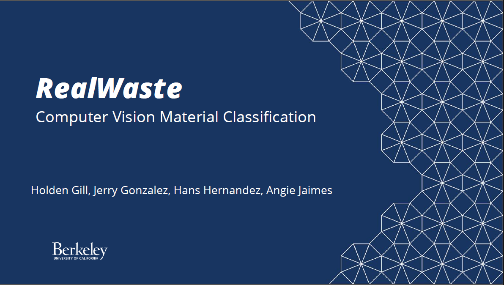
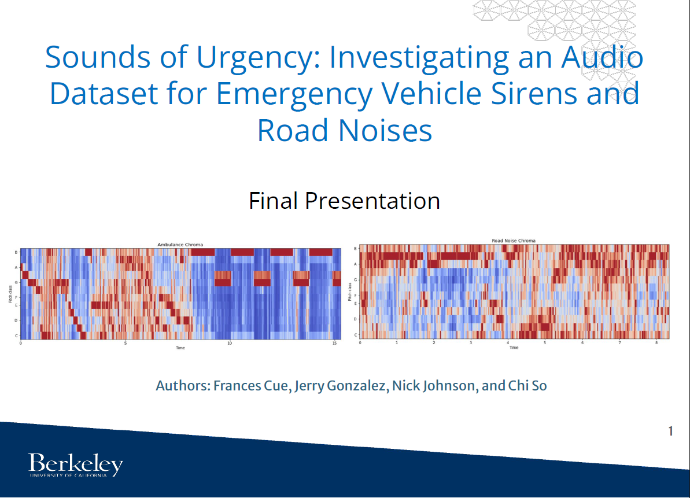
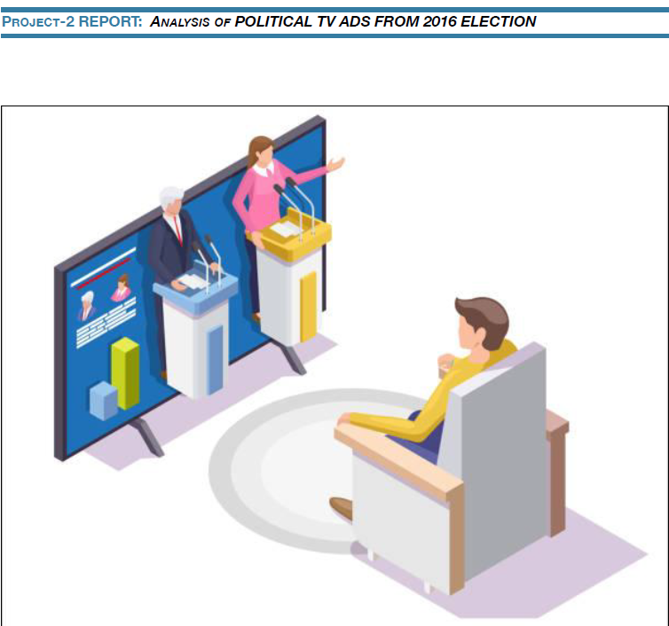

Data scientist and hardware/systems engineer
Hi there! I'm a dynamic and bilingual data scientist and engineer who loves diving into big data, machine learning, and optimizing processes. I'm all about using thorough research and smart algorithms to keep data quality top-notch and accurate. I’ve got a knack for solving problems and turning complex data into clear insights through engaging reports and visuals. I’m quick to pick up new tech and concepts, always aiming to make things run smoother and more profitably. Whether flying solo or working in a team, I thrive in any setting and love pushing boundaries.
Graduated from the MIDS program at the UC Berkeley School of Information on May 2024.
JeopardyLLM: Adventures in Retrieval-Augmented Generation
I played a key role in a dynamic five-member team that revolutionized data engineering for Jeopardy trivia by implementing cutting-edge retrieval-augmented
generation technologies. Our project streamlined the integration of over 470,000 Jeopardy clues from 39 seasons into a powerful data processing system.
We crafted a sophisticated data modeling framework that efficiently transforms historical trivia into contextual data for our FLAN-T5 language model.
The result? The JeopardyLLM application—an innovative, interactive tool that allows users to delve into a vast database of historical clues and uncover answers.
This tool not only enhances the user experience but also boasts an acceptable 31.7% accuracy rate on challenging championship-level questions.
RealWaste: Trash, Compost, Recyclable Classification Solutions
This project classifies waste images from the RealWaste Dataset, into three categories: Trash, Recyclable, and Compost.
Click the image below to view the report:

Chess Banter: Does engaging with an opponent in online chess impact their performance?
Bullying in online games is a serious problem and online chess is no exception. The purpose of trash talking is to try to decrease opponent performance by distracting opponents into heightened emotions and
less logical decision making. This project posits that encountering a text designed to provoke a challenge from an opponent may create a sense of perceived rivalry, ultimately enhancing their gameplay accuracy and performance.
Click the image below to view the report:
Distinguish Emergency Vehicles in Traffic
This project uses machine learning techniques to distinguish emergency vehicle sirens from regular road noise to improve traffic flow and reduce congestion.
Click the image below to view the report:

Exploring Difficulty Voting in the 2020 Election
This project performes exploratory data analysis and creates visualizations to explore whether Democratic or Republican voters experienced more difficulties voting in the 2020 election.
Click the image below to view the report:
